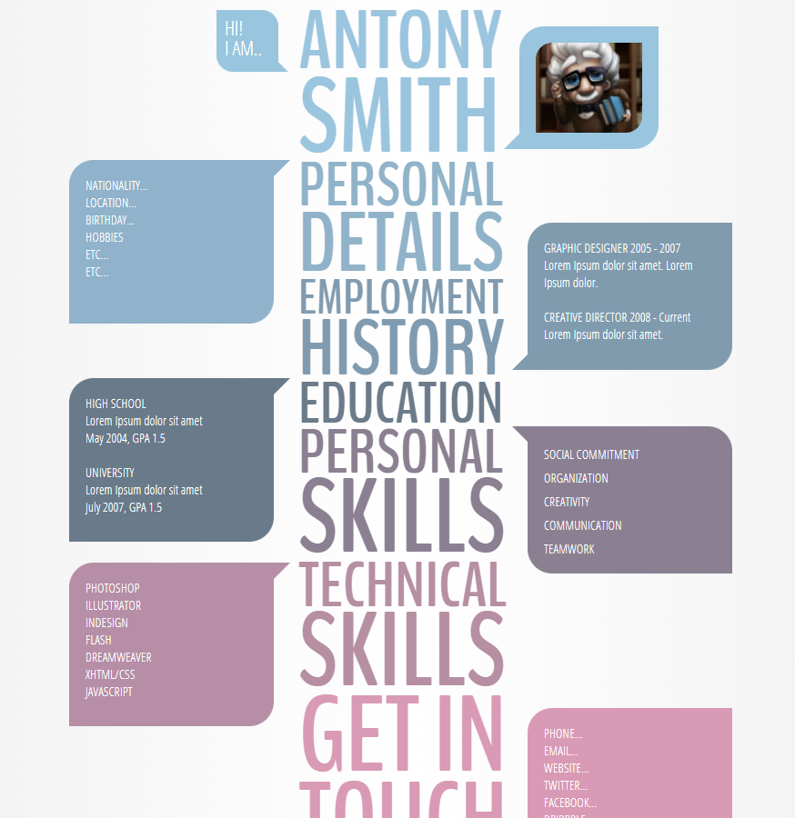
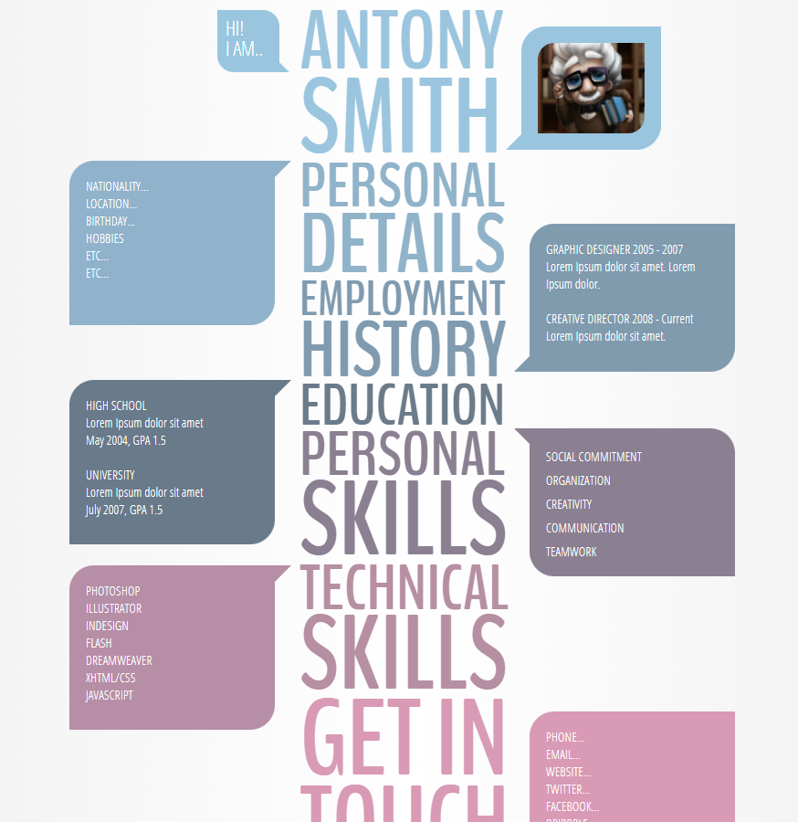

Creative resume templates make design simple and quick. Anyone can create their own resume these days. But because so many people use the same software, their resumes can look generic and mass-produced.
TO GET MOR INFO!
Get through this site here you find more creative resume and build your own resume in diffrent style.

 
GO BACK

GO BACK